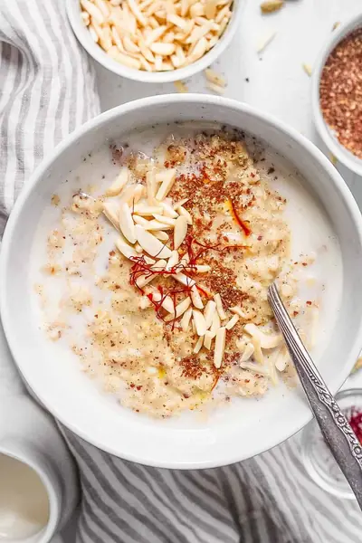

Spicy Oatmeal

Ingredients
- ½ cup rolled oats
- 1½ cups water
- 3 tsp ground flax seed
- 2-3 tsp slivered almonds
- 1 pinch saffron
- ⅛ tsp salt
- ⅛ tsp ground cardamom
- 1 pinch ground nutmeg
- 1 tsp coconut sugar or agave or honey
- ½-⅔ cup 1% organic milk (the creamier you want the oatmeal, the more milk you should add)
Steps
- Cook the oats with the water in the microwave for 2 minutes. Stir, and cook again in the microwave for 1-2 minutes more until all the water is absorbed and the oats have a very creamy texture. Depending on your microwave, you might have to cook them for longer for them to become soft.
- Stir in the saffron, flax seed, and almonds. The heat of the oatmeal will help melt the saffron until it’s fully combined.
- Add the rest of the spices (salt, cardamom, nutmeg, stevia) and stir to combine.
- Stir in the milk until the oatmeal is the consistency you like.
- Heat the oatmeal again in the microwave for 1-2 minutes until it is hot and ready to eat.
Recipe by Anjali Shah · The Picky Eater, from The Picky Eater. Saved here for personal use; the original has the full notes, tips and photos. Open original